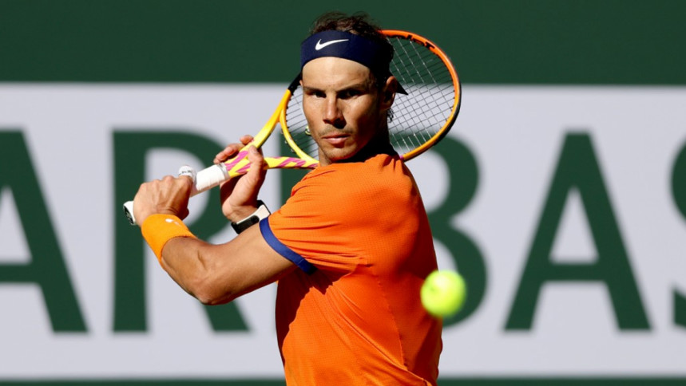

Report By : The Daily Star
Rafa Nadal credited his uncle Toni and the rest of his family for teaching him from a young age how to control his emotions on the court and fight for every point after his epic come-from-behind win at Indian Wells on Saturday. The Spaniard overcame a 5-2 third set deficit to beat young American Sebastian Korda 6-2 1-6 7-6(3) and advance to the third round of the tournament. "The reason why I have been fighting during all my tennis career or I have the right self-control or I have the right attitude and fighting spirit is because I grew up with this kind of education," Nadal told reporters after the match. "My uncle, my family, never allowed me to break a racket, never allowed me to say bad words or give up on a match ... the most important thing was the fact that I grow up with the right values." The 21-time Grand Slam champion has won all 16 of his matches this year but said despite all of his success, he does not possess super human confidence. "If people believe that I am a believer all the time that I am going to come back, not true. I am not like this. I don't have this amazing self-confidence that even if I am 5-2, okay, I going to come back. No. "But in my mind is, okay, is almost impossible. I don't want to give up. I going to keep trying ... just try to keep going and to put the things a little bit more difficult to the opponent."